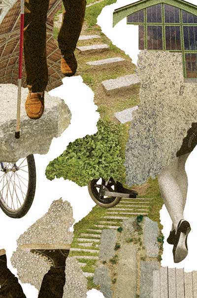

Parcours conté de Tour & Taxis à Bockstael
01
balade
nature
Qui a dit que le chemin le plus court était celui tracé par la nature ? La nature profite des interstices et suit des sentes tortueuses, recherchant tantôt l'ombre et tantôt le soleil. Qui va lentement va sûrement. Pour éviter le danger, pour profiter du moment, pour ne pas aller quelque part, mais ailleurs ; il faut prendre le rallongi qui serpente vers la liberté. Vous êtes pressé·es ? Faites un détour !
Langue de l'activité :
|fr|

Infos pratiques
Organisateur : Conte en balade
dimanche 15 octobre
hehe
ok
15:00
Réservation obligatoire :
oui
Prix : 0€
Prix : 0€
Entrée du Parc Tour et Taxis
86C, Parc Tour et Taxis
1020 Laeken
Booking via Link :
Bookinglink